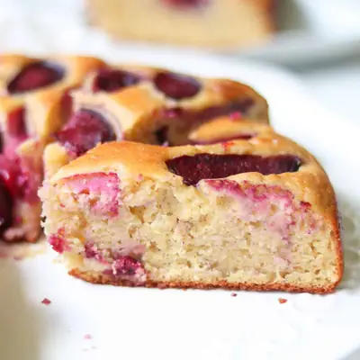

Yogurt Plum Cake

Ingredients
- 1 1/4 cup white whole wheat flour (180g)
- 1 1/2 teaspoons baking powder
- 1/2 teaspoon baking soda
- 1/4 teaspoon salt
- 1 cup plain Greek yogurt (230g)
- 3 eggs
- 1/4 cup melted butter (see note)
- 1/3 cup maple syrup or honey
- 2 teaspoons vanilla extract
- 2 tablespoons lemon zest
- 2-3 ripe plums, sliced
Steps
- Preheat your oven to 350°F (175°C). Grease or line an 8-inch round cake pan with parchment paper.
- In a large bowl, whisk together the eggs, Greek yogurt, melted butter (or oil), maple syrup (or honey), and vanilla until smooth.
- In a separate bowl, combine the dry ingredients and add to the bowl with the wet ingredients.
- Gently fold together until just combined. Avoid overmixing to keep the cake light and fluffy. Gently fold in the lemon zest at the end to evenly distribute it through the batter.
- Pour the batter into your prepared cake pan. Arrange the plum slices on top in a circular pattern.
- Bake for 25-30 minutes, or until a toothpick inserted into the center comes out clean.
Recipe by Min Kwon · Kidfriendly Meals, from MJ and Hungryman. Saved here for personal use; the original has the full notes, tips and photos. Open original